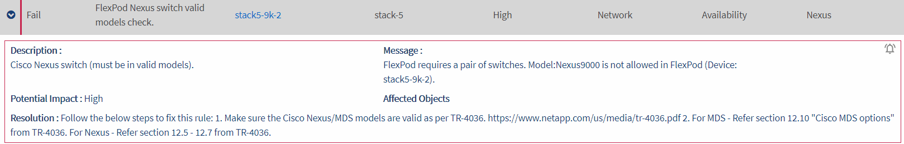
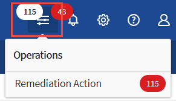
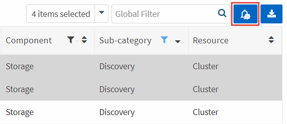

인프라 규칙을 모니터링합니다
기여자
인프라를 모니터링하려면 실패한 규칙을 해결하고 규칙을 억제하고 억제된 규칙 목록을 보고 필요한 경우 억제를 종료하도록 선택합니다.
실패한 규칙 및 경고에 대한 경고를 검토합니다
Converged Systems Advisor는 인프라를 지속적으로 모니터링하고 경고 및 오류를 생성하여 시스템이 모범 사례에 맞게 구성 및 수행되도록 합니다.
-
에 로그인합니다 "Converged Systems Advisor 포털" 를 클릭하고 * 규칙 * 을 클릭합니다.
규칙 페이지에는 모든 규칙의 요약이 표시됩니다. 각 규칙의 상태는 * Pass *, * Warning * 또는 * Fail * 입니다.
-
상태 열에서 필터 아이콘을 클릭하고 * 실패 *, * 경고 * 또는 둘 다를 선택합니다.

-
상태 열 옆에 있는 화살표를 클릭하여 개별 규칙에 대한 세부 정보를 검토합니다.

-
문제 해결을 위한 지침에 따라 문제를 해결합니다.
필요한 경우 구성 기록을 검토합니다 문제 해결에 도움이 되는 인프라
상담원이 처리한 규칙의 상태는 에이전트의 다음 수집 기간 후에 통과 로 표시되어야 합니다.
실패한 규칙 수정
Converged Systems Advisor는 컨버지드 인프라의 기본 문제를 수정하여 실패한 일부 규칙을 해결할 수 있습니다.
-
Premium 라이센스가 있어야 합니다.
-
통합 인프라의 소유자로 할당되어야 합니다.
-
에 로그인합니다 "Converged Systems Advisor 포털" 를 클릭하고 * 규칙 * 을 클릭합니다.
규칙 페이지에는 모든 규칙의 요약이 표시됩니다. 각 규칙의 상태는 * Pass *, * Warning * 또는 * Fail * 입니다.
-
수정할 수 있는 필터 규칙 * 을 선택합니다.
-
해결하려는 규칙을 확장합니다.
-
을 클릭합니다
 확장된 규칙의 오른쪽 위 모서리에 있습니다.
확장된 규칙의 오른쪽 위 모서리에 있습니다.아이콘이 비활성화되면 에이전트가 오프라인이거나 소유자 권한이 없거나 프리미엄 라이센스가 없기 때문입니다.
-
필요한 경우 입력 값을 입력합니다.
실패한 규칙에 따라 문제를 해결하려면 일부 입력 값이 필요합니다.
-
교정 작업이 성공적으로 완료된 후 데이터 수집을 수행하려면 * 수정 작업이 완료될 때 수집 * 옵션을 선택합니다.
-
치료 실행 * 을 클릭합니다.
-
확인 * 을 클릭합니다.
-
실패한 규칙을 해결하기 위해 취하는 조치를 보려면 * Operations * 아이콘을 클릭하고 * Remediation Action * 을 선택합니다.

실패한 규칙을 억제합니다
Converged Systems Advisor를 사용하면 규칙을 억제하여 대시보드에 표시되지 않고 규칙 실패 시 이메일 알림을 더 이상 보내지 않도록 할 수 있습니다.
예를 들어, 텔넷을 사용하도록 설정하는 것은 권장되지 않지만, 텔넷을 사용하도록 설정하려면 규칙을 억제할 수 있습니다.
알림을 구성하려면 프리미엄 라이센스가 있어야 합니다.
-
대시보드에서 * 규칙 * 을 클릭합니다.
-
표의 내용을 필터링하여 원하는 규칙을 찾습니다.
-
경고 또는 실패 상태인 규칙에 대해 하나 이상의 행을 선택한 다음 * 경고 * 아이콘을 클릭합니다.

-
기간을 선택한 다음 * 제출 * 을 클릭합니다.

|
경고를 활성화하려면 동일한 단계를 따르고 * 기능 억제 종료 * 를 선택합니다. |
Converged Systems Advisor는 더 이상 지정된 기간 동안 규칙에 대해 알려주지 않으며 대시보드에는 더 이상 규칙을 표시할 수 없습니다.
기능 억제된 규칙 표시
-
설정 * 아이콘을 클릭하고 * 기능 억제 규칙 * 을 선택합니다.

-
표시를 시작할 기능 억제된 규칙을 선택합니다.
-
알림 * 아이콘을 클릭합니다.
-
기능 억제 종료 * 를 선택한 다음 * 제출 * 을 클릭합니다.
선택한 규칙에 대해 알림이 활성화되고 규칙이 규칙 테이블 및 대시보드에 표시됩니다.
 문서 변경 요청
문서 변경 요청 이 페이지 편집
이 페이지 편집 기여하는 방법 자세히 알아보기
기여하는 방법 자세히 알아보기